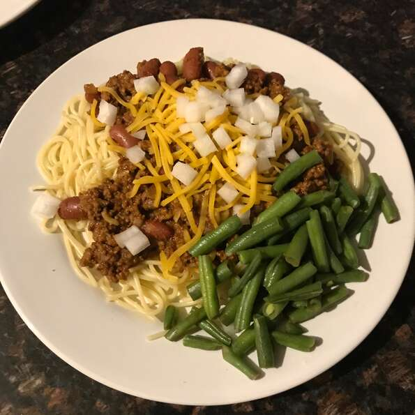

Chili Recipe

Description:
Delicious Chilik Recipe. A family favorite!
Ingredients:
- 9 lasagna noodles
- 1/4 cup of margarine
- 1/4 cup all-purpose flour
- 1/2 teaspoon salt
- 1 cup milk
Steps:
- Bring a large pot of lightly salted water to a boil. Cook lasagna in the boiling water, stirring occasionally until cooked through but firm to the bite, about 8 minutes. Drain.
- Preheat oven to 375 degrees F (190 degrees C).
- Melt margarine in a skillet over low heat; cook and stir flour, salt, and pepper into the melted margarine until smooth and bubbling, 2 to 3 minutes. Add milk and broth into flour mixture, stirring constantly; bring sauce to a boil. Stir wine into sauce and remove from heat. Stir Parmesan cheese into sauce until smooth.
- Whisk ricotta cheese, egg, and egg white together in a bowl.